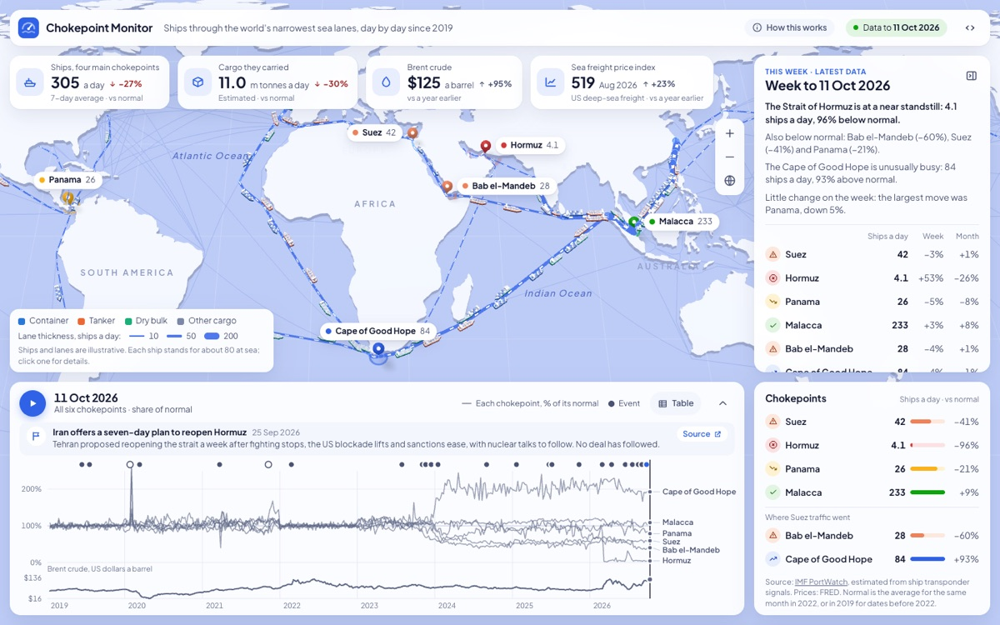

chokepoint monitor
live ↗
code ↗

Daily ship traffic through Suez, Hormuz, Panama and Malacca since 2019, on a 3D world map, with the events that moved it, oil prices alongside, and data and headlines that update themselves every day.
data visualisation, 3d map, python pipeline · 2026